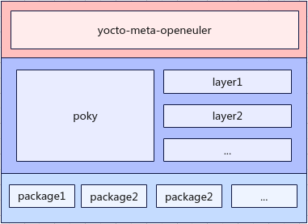

更新命令-update¶
该命令用于对oebuild的构建环境做初始化准备工作，主要是对必要的启动代码和执行容器做更新操作。openEuler Embedded的构建框架采用的是yocto构建框架，yocto构建的一个特点就是分层模型，这也意味着对于特性组件可进行插拔式选用，openEuler Embedded的代码主要分为三层，如下图所示：
最上层是主构建层，即为openEuler Embedded的源码，决定着openEuler Embedded的特性配置，第二层为构建特性相关的layer层，这里需要额外说明的是poky，poky在yocto中是主干，yocto的构建离不开poky，其他层是特性层，例如添加图形特性，那么就需要添加图形层，想要添加ros特性，那么就需要添加ros层等。第三层是openEuler Embedded依赖的包列表，主构建仓决定着依赖的其他层的版本，也决定着依赖的软件包。
更新命令使用如下：
oebuild update [yocto/docker/layer] [-tag]
Note
需要注意的是更新命令必须在oebuild工作目录下执行。
更新主要面向的对象有三个，分别是yocto，docker和layer。
yocto更新¶
对yocto更新使用如下命令：
oebuild update yocto
对yocto的更新主要是解析.oebuild/config.yaml，该配置文件中记录着主构建仓yocto-meta-openeuler相关的远程分支信息，包括下载后本地的路径命名（path表示）、远程代码仓链接（remote_url表示）、分支名（branch表示）等，依据解析好的主构建仓信息执行clone或pull操作，对应的完成下载或更新操作。
Note
对yocto的更新会首先在 src/yocto-meta-openeuler 中进行git初始化，然后会遍历所有remote，如果有一个remote_url和解析好的remote一致，则直接进行fetch操作，然后再执行checkout操作，如果在遍历完所有remote后，并没有发现和解析好的remote一致的remote_url，则会动态在本地yocto-meta-openeuler构建仓添加一个远程分支，并将其命名为upstream，然后针对upstream进行fetch操作，然后再执行checkout操作。期间，如果执行失败则会抛出异常。
layer更新¶
对layer的更新使用如下命令：
oebuild update layer
对layer的更新需要依赖到yocto-meta-openeuler，前文介绍过，主构建仓决定着依赖的其他layer层及其版本，因此在更新layer时会检测yocto-meta-openeuler是否存在，如果不存在，则先对yocto-meta-openeuler进行下载，执行逻辑与 oebuild update yocto 一致。然后检测当下目录是否为构建目录，如果为构建目录，则会根据构建目录下的构建配置文件解析依赖的layer层，然后进行更新操作，否则解析 yocto-meta-openeuler/.oebuild/common.yaml 配置文件，该文件中记录着构建openEuler Embedded标准镜像所依赖的layer层信息。
docker更新¶
对docker的更新使用如下命令：
oebuild update docker -tag <tag>
对docker的更新会先对docker环境进行检测，如果docker环境不满足，则会报异常，具体docker环境的安装请参考 安装介绍 进行安装，这里说的对docker的更新其实是指对openEuler Embedded构建镜像的更新，因为openEuler Embedded的版本与构建镜像是一一对应的，并不是一个容器可以实现所有openEuler Embedded版本的构建，这其中的原因是各个版本的内核不同，有可能引出的c库版本不一致，因此编译链也会不同，同时构建工具也会因各个版本的构建而有所不同，因此对于openEuler Embedded的构建容器会与版本一一对应。
对构建容器镜像的更新按以下逻辑规则进行：
如果在更新时对tag参数进行了传参，则选用传参的tag进行更新，但是该tag并不是随意命名的，必须是有效的。oebuild对docker的tag的有效性如何判定呢，oebuild会解析工作目录下.oebuild/config.yaml配置文件，该文件中有openEuler Embedded各版本与构建容器镜像版本的一一对应信息，因此oebuild如果检查后发现tag参数并不在列出的tag列表中，则视为无效tag，对于无效tag的处理，oebuild会列出所有有效的tag来供用户参考。
如果在更新时没有对tag进行传参，则会通过以下方式获取要更新的容器镜像。
首先会检测 yocto-meta-openeuler/.oebuild/.env.yaml 文件是否存在，该文件记录着当下openEuler Embedded版本所对应的容器镜像。如果存在，则选用该文件记录的构建镜像进行更新，如果不存在则会通过src/yocto-meta-openeuler的分支信息来判断，前文讲过。oebuild/config.yaml中记录着openEuler Embedded各版本与构建容器版本的一一对应信息，而oebuild会通过解析yocto-meta-openeuler的分支来比对该映射信息，如果存在则更新对应的容器镜像，否则oebuild会列出所有有效的tag来供用户参考。
Note
oebuild对于openEuler Embedded的容器管理有两种方式，一种是在yocto-meta-openeuler主构建仓下的oebuild相关目录.oebuild下有一个记录构建环境的文件env.yaml，该文件中记录着当下版本对应的构建容器镜像，另一种就是通过解析源码目录中的git信息，获取branch来与对应的tag列表进行比对来获取构建容器镜像版本。